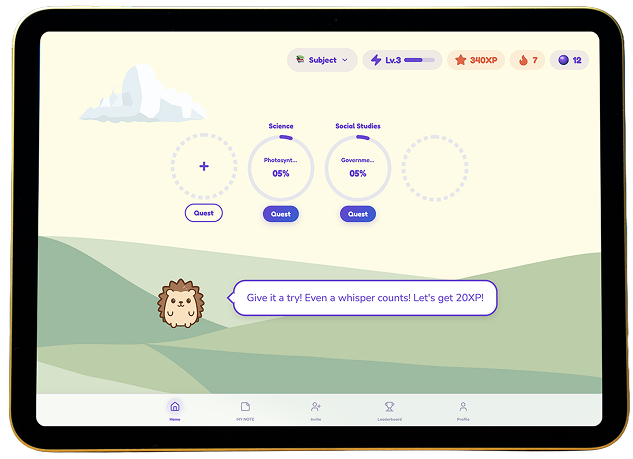
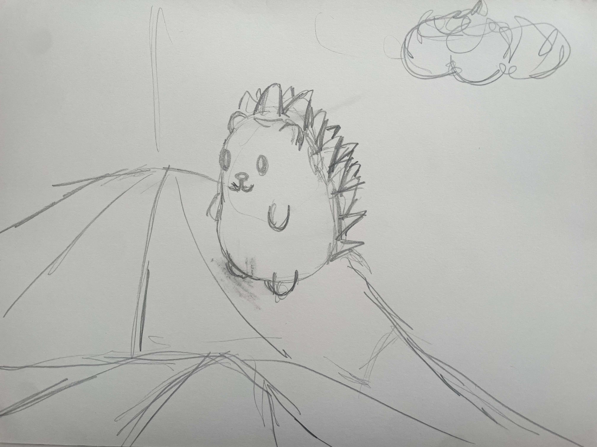
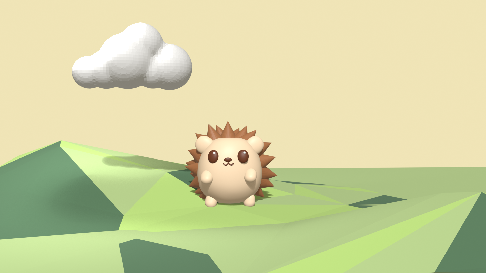
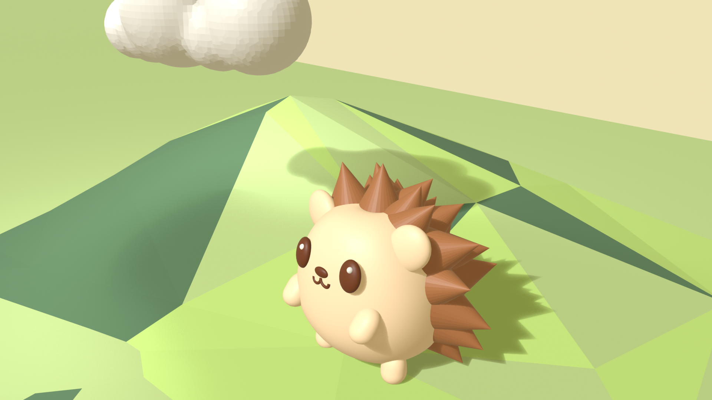
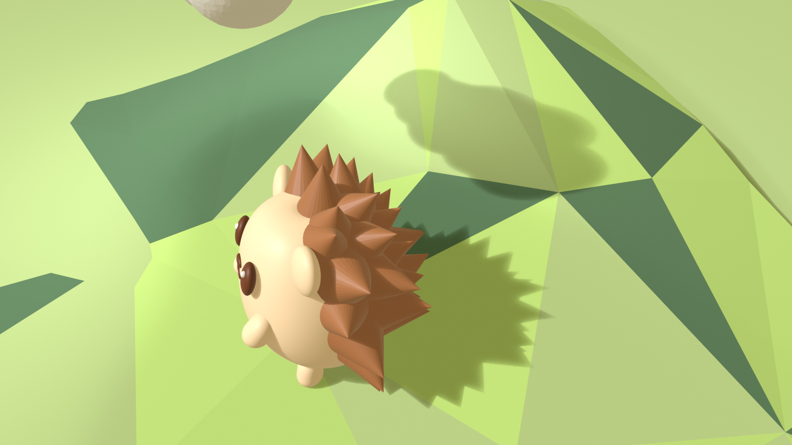

01Ideation
For this project, I started with something I had already made. I designed a learning app for kids, and its home screen features Milo, a 2D hedgehog character, set against a low-poly landscape of rolling hills and a cloud that I created in Illustrator. Looking at that screen, I started wondering what it would feel like if Milo and his world stepped out of the flat illustration and into three dimensions.
That question became the starting point for this assignment. I decided to rebuild the scene in Blender as three objects (Milo, the hills, and the cloud), with a standing plane behind them as a backdrop to recreate the soft cream-colored sky of the app, and see how the character and the low-poly style would translate into 3D. (Milo, the hills, and the cloud), with a standing plane behind them as a backdrop to recreate the soft cream-colored sky of the app, and see how the character and the low-poly style would translate into 3D.


02Process
Backdrop and Hills
I built the backdrop the way we learned in class: I added a plane, stood it upright behind the scene, and scaled it up until it filled the camera view. To keep the sky a flat, even cream color like in the app, I gave it an Emission material so that it would not be affected by the lighting.
For the ground, I started with a plane, subdivided it, and used Proportional Editing to pull up a few vertices into soft, rolling hills. I then triangulated the faces and switched to Flat Shading to get the low-poly look. At first, the faces were too small and dense, which made the hills look busy rather than clean and graphic like my original illustration. To fix this, I used Decimate Geometry to merge the small faces into larger triangles, lowering the ratio until the facets felt bold and simple. Finally, I created three slightly different shades of green and randomly assigned them to the faces, so each facet catches a slightly different tone, just like the hills in the app.
Cloud
To build the cloud, I added several spheres of different sizes and overlapped them to form a puffy cloud shape. I selected all of them and pressed Ctrl+J to join them into a single object. Then I used Ctrl+A > Scale to apply the scale, so that the modifiers I added next would work evenly across the whole shape.
Even after joining, the spheres were still separate pieces overlapping inside one another. To fuse them into one continuous surface, I added a Remesh modifier (Generate > Remesh) in Voxel mode and adjusted the Voxel Size until the spheres melted together into a single shape. Remesh divided the surface into many small faces, and I added a Decimate modifier, adjusting the Ratio to tidy up the mesh while keeping the faces small. Unlike the hills, where I wanted big, bold facets, I chose to keep the cloud finely faceted so it would look soft and fluffy, while still showing a subtle low-poly texture up close.
Milo's Spikes
Milo's spikes were the most important part of the character, and also the hardest. After trying several automated methods (described in the Learning section below), I ended up placing cone-shaped spikes one by one around the back and edges of the body. This gave me full control over the size, angle, and position of each spike, so I could match the silhouette of my original illustration. Once all the cones were in place, I gave one of them a brown material and used Ctrl+L > Link Materials to apply it to every spike at once.
Milo's Mouth
For Milo's small "ω"-shaped mouth, I wanted a clean line rather than a solid shape, so I used a curve. I added a Bezier curve, deleted its default points, and then used the Draw tool (the pencil icon) to sketch the mouth directly onto Milo's face. By setting the tool's Depth to Surface, the line I drew stuck to the curved surface of the body. To turn the thin line into a visible shape, I increased the Bevel Depth in the curve settings, which gave the line thickness like a tube, and turned on Fill Caps to close the ends. When I tried to rotate the mouth, it swung around a point far away from it, so I used Set Origin > Origin to Geometry to move the pivot to the center of the mouth before adjusting its angle.
03Learning New Software
The Spikes
My first plan was to create all the spikes at once from a single Ico Sphere. I tried selecting random vertices and pushing them outward with Shrink/Fatten, but the shortcut didn't work as I expected. Next, I tried pulling vertices out one at a time, but the whole object kept moving instead. This was when I realized the difference between Object Mode and Edit Mode, and how what is selected changes what a tool affects. I also learned that adding a new shape while in Edit Mode merges it into the current object. This is why my Ico Sphere had become part of Milo's body, and I had to separate it using P > Selection.
Finally, I tried selecting all the faces, using Extrude Individual Faces, and scaling each one down to a point with the pivot set to Individual Origins. Technically, it worked, but the result was a uniform ball of thin, needle-like spikes that didn't feel like Milo at all. In the end, I went back to the simplest approach of placing cones by hand. This taught me that the most efficient technique isn't always the right one. Sometimes a manual approach gives you the control you need to stay true to the design.
The Cloud
For the cloud, I wasn't sure how to merge several spheres into one soft shape, so I found a YouTube tutorial and followed along. It taught me how to combine multiple objects into one and how to control how finely a surface is divided, from dense and smooth to simple and faceted.
Milo's Mouth
I had no idea how to draw a thin line like Milo's mouth in 3D, so I asked Claude for help and followed the steps it suggested. Along the way, I asked follow-up questions whenever I got stuck, such as where to find the Depth setting or why the mouth swung around when I rotated it. This back-and-forth helped me understand not only what to do, but also why each step mattered, such as how an object's origin affects how it rotates.
Lighting and Rendering
Setting up the renders brought new challenges. When I moved the Sun lamp, the shadows didn't change at all. I learned that in Blender, a Sun light's position doesn't matter, and only its rotation, or the direction of the light, affects the shadows. Even after adjusting the angle, the shadows were still faint. It turned out that the World background was adding soft light from every direction and washing out the shadows, so lowering the World strength and increasing the Sun strength made them much clearer. Finally, when I tried a side angle, the edge of my backdrop became visible, which reminded me that a scene only needs to look complete from the camera's point of view.
04Renders

Front View
I chose a front view to recreate the composition of my app's home screen, with Milo standing on the hills and the cloud floating in the sky. This angle makes it easy to compare the 3D scene with the original 2D illustration.

High Three-Quarter View
For the second render, I moved the camera closer and slightly above Milo at an angle. This view shows the volume of the character, including the spikes, ears, and arms, and the shadow falling across the faceted hills, which a flat illustration can't show.

Top-Down View
For the last render, I looked down on Milo from above and to the side to highlight the spikes. I angled the Sun so that the spiky shadow stretched across the hills, and the cloud's shadow also appears on the slope, connecting all the objects in the scene.